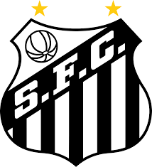

Historia
Santos Futebol Clube
Sou alvinegro da Vila Belmiro
O Santos vive no meu coração
É o motivo de todo o meu riso
De minhas lágrimas e emoção
Sua bandeira no mastro é a história
De um passado e um presente só de glórias
Nascer, viver e no Santos morrer
É um orgulho que nem todos podem ter
No Santos pratica-se o esporte
Com dignidade e com fervor
Seja qual for a sua sorte
De vencido ou vencedor
Com técnica e disciplina
Dando o sangue com amor
Pela bandeira que ensina
Lutar com fé e com ardor
Curiosidades
- Fundado em 14 de abril de 1912
- Em 4 de fevereiro de 1969, uma terça-feira, a Guerra de Biafra parou para o povo nigeriano ver o Santos jogar. Em partida que não tinha sido programada pelo empresário Samuel Ratinoff e só foi decidida após o Santos ter recebido garantias de que sua permanência seria segura, o Alvinegro Praiano jogou em Benin, quase na fronteira da Nigéria com a região separatista de Biafra, e venceu a Seleção do Meio Oeste por 2 a 1, entrando para a história como o primeiro time a interromper um conflito armado.
| Silver |
Gold |
Black |
| R$27,00 |
R$45,00 |
R$142,00 |